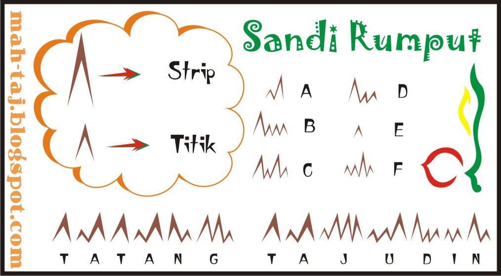

Sandi rumput adalah sistem representasi huruf, angka, dan tanda baca yang di buat berdasarkan prinsip kode morse. Berarti kunci utama terletak pada sandi morse. Perbedaan antara keduanya hanya terletak pada cara penulisan, dimana titik dan garis pada kode morse diganti dengan rumput kecil dan rumput besar.
Berikut merupakan contoh gambar :

sumber : sandiramu.blogspot.com